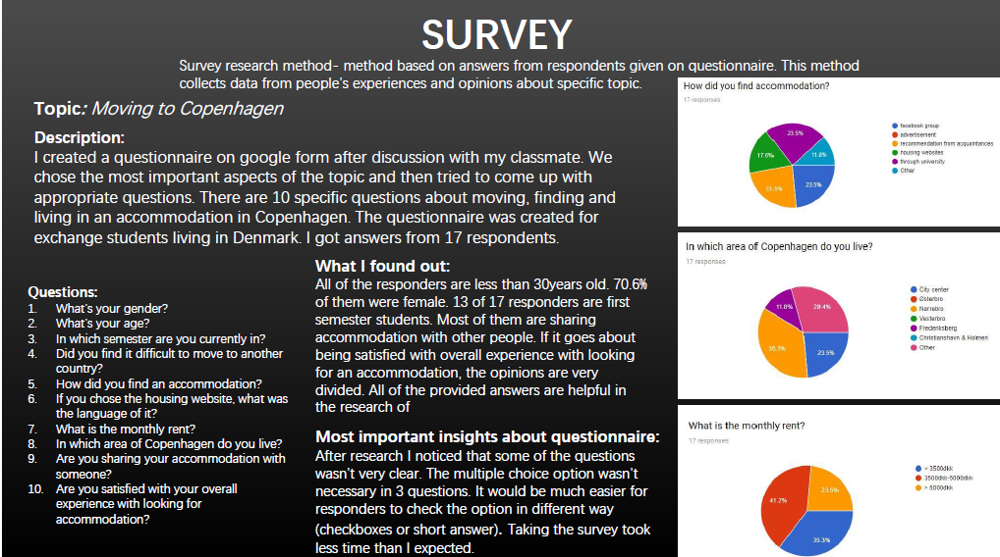
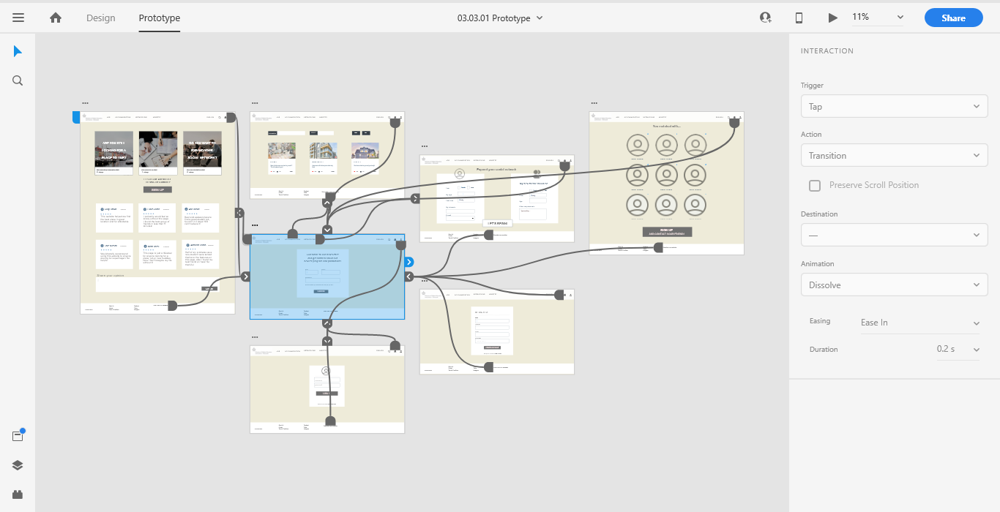
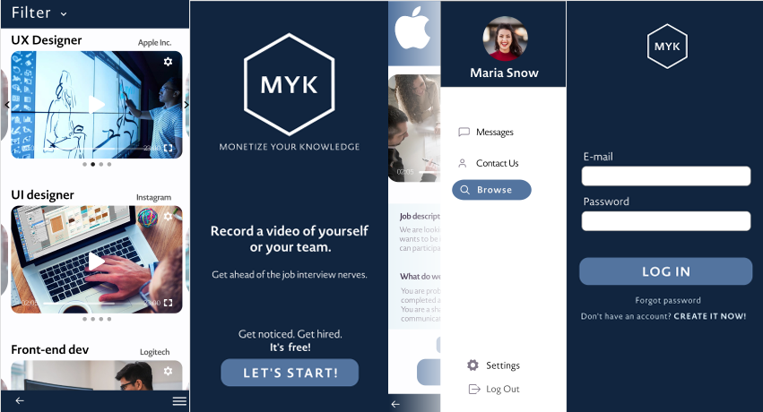

Theme 02: Basic UX
03.01.01 - Data collection
Data Collection PDF
Goal:
Doing and presenting research and analysis insights on a chosen topic.
Process:
In the beginning, I was doing desk research where I used relevant websites, analyses, articles, blogs, and collected the most important links and materials about a chosen topic “Legos used in the context of children's learning”. Then I had to do observation research which was about Kitchen culture. While sitting in a café and observing the place I took notes and pictures of the situation. During an interview research method I asked a person 8 questions relevant to the topic: “A hobby or an interest”. While conducting the interview I used recorder and also took some short notes. Then I wrote the most important insights of the interview in the documentation file. At last, In pair we used the survey research method and made an online survey using Google forms. We had to create an online questionnaire about being an exchange student in Copenhagen. We used our fellow students as respondents and got 17 responses. The processing of my research data from the four research tasks was combined into one document. In each research, I had to describe how I conducted the study and describe what I exactly saw.
Gains:
- Presenting my knowledge from all of the four types of research.
- Learning how to conduct an interview, do different kinds of researchand and collect relevant information about a specific topic.
03.03.01 - Prototype
 Prototype in Adobe XD Documentation PDFGoal:
Building a functional, interactive Hi-Fi prototype in Adobe XD of a website, which helps new international students in Copenhagen to find accommodation, a job, and a social network.
Process:
In a group of three, we were researching conventions in regards to content, design, and functionality of job, dating and housing portals. We also did the research on digital communication targeted towards an international student audience. We also had to remember that the provider of the site is the Danish Ministry of Higher Education and Science. Then we choose the social network to be the most important feature of our prototype. Firstly We sketched a wire-flow showing all the possible interactions on our website and created a style tile with design elements. We created a low-fidelity prototype using a UI kit In Adobe XD. Afterward, we built a hi-fi solution by using the design elements form our style tile. At the end of the assignment, we conducted the ‘Think Aloud Test’” with 5 people. During the testing, we used a recorder and notes as our equipment. We found out about some significant errors on the website such as navigation or scrolling on a page. After that, we summarized the improvements we would make based on results from the “Think Aloud Test”. All process of creating a prototype was documented in pdf where we described the aim, expectations, and functionality of the website.
Gains:
- Working UX oriented trying to create an optimal user experience for the target audience
- Applying input forms to user interface in the prototype
- Learning how to create a digital solution that follows common conventions
- Using UI kit, copy, and microcopy to provide good UX.
- Describing and presenting argumentation of how we have used our findings in the prototype.
03.04.01 - Design sprint
 Prototype in Adobe XD Documentation PDFGoal:
Creating a high fidelity prototype using the design sprint method to create a native mobile app. Focusing on one main goal - improving student life and studying for KEA students.
Process:
In five days while working in a team of seven people we were led by a facilitator and decider. We had to go through all sprint stages day by day:
- Map- Through brainstorming, we mapped out the problem and picked an important place to focus. We discussed our long term goal - creating an app to monetize the knowledge for Kea people by finding a job, project or internship
- Sketch- sketching our competing ideas and solutions on paper.
- Decide- we had to make difficult decisions and turn ideas into a testable hypothesis.
- Prototype- by implementing ideas we created a high-fidelity prototype. Then we had to test our solution.
- Pitch- We did 7-minute to-the-point pitch and tried to convince the audience to our solution
Gains:
- Learning how to Work in a team with a certain person responsible for making the final decisions.
- Understanding all steps of the design sprint
- Getting used to the XD prototype creation with UI kit and implementing design ideas from style tile.
- Getting used to user testing of the solution.